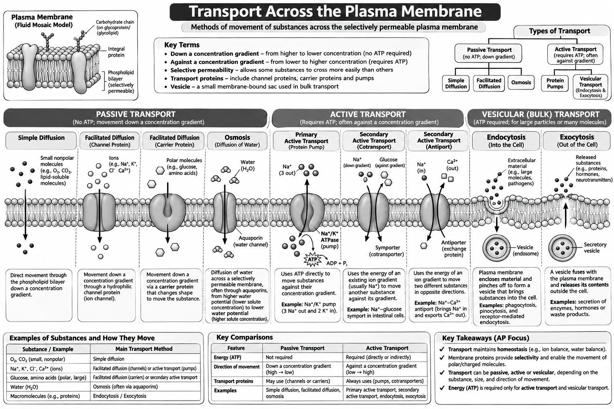

Turn the book sideways. This one-page chart puts every Unit 2 transport mechanism side by side: passive transport (simple diffusion, facilitated diffusion, osmosis), active transport (pumps and cotransport), and bulk transport (endocytosis and exocytosis).
